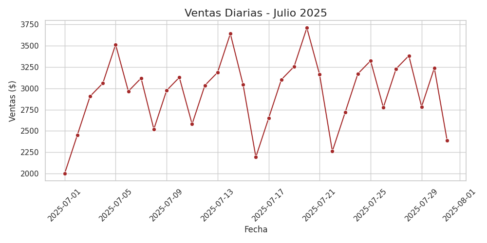
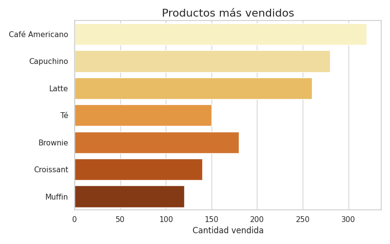
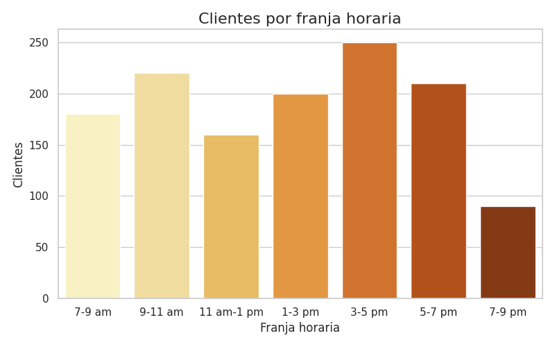

Nuestra Comunidad
En Anteiku creemos que el café es más que una bebida: es un punto de encuentro, de inspiración y de cultura.
☕ Historias de nuestros clientes
Conoce cómo el café ha cambiado momentos especiales en la vida de quienes nos visitan.
📸 Comparte tus momentos
¿Tienes una foto con nuestro café? ¡Súbela a redes usando #CaféConAnteiku!
📠Recetas & Tips
Descubre recetas caseras, tips de preparación, y secretos del barismo para que disfrutes al máximo tu café en casa.
📊 Análisis de Nuestra Comunidad

Ventas diarias registradas durante el mes de Julio 2025.

Productos más populares entre nuestros clientes.

Franjas horarias con mayor afluencia de clientes.